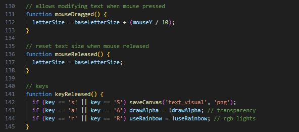

Experiment 6 - Grammars & Text Art
Use 'S' key to save a png capture.
Use 'R' key to toggle rgb cycle.
Use 'A' key to toggle text transparency.
Description
This experiment has us experiment with text and how to adjust and change them to create fun designs.
This experiment focuses on mouse positions to adjust the text size and position to sort and mess up the lines from the Art of War I used.
This is my final result

Technical
Imitate
For this project I took inspiration from the design and code of a generative design we were able to choose from for this assignment.
The example I chose from was the one below where you can change the word's opacity with the 'A' key and mouse X position will sort the text so from A-Z letters closer to A will be higher and ones closer to Z will be lower.
Design Link
Intergrate
To start this project I first implemented my own version of the example design by getting my code to also sort based on mouse X position.
The 'A' key also does the alpha transparency adjustment.
Innovate
I was quite happy with my integration but now it was time to go further. I added a way to move my text using the mouse Y position too but also change size based on it.
This was based on this design where the mouse X position could be used to change a letter's size.
I also adjusted the default color to magenta for something nicer to me and added where the 'R' key would create a color cycle like rgb keyboards.

Reflection
This experiment was really easy to do.
I was quite easily able to imitate the design I liked and it was fun messing around to make the design do more than just sort alphabetically by the X position of the mouse.
I had to incorporate if statements like I would in Unity with, if the mouse held then allowed Y position tracking. This was fun since I haven't really got to do that yet for this project.
I also had no issue creating the rgb cycle effect which adds that colorful touch. I'm quite happy how this turned out.